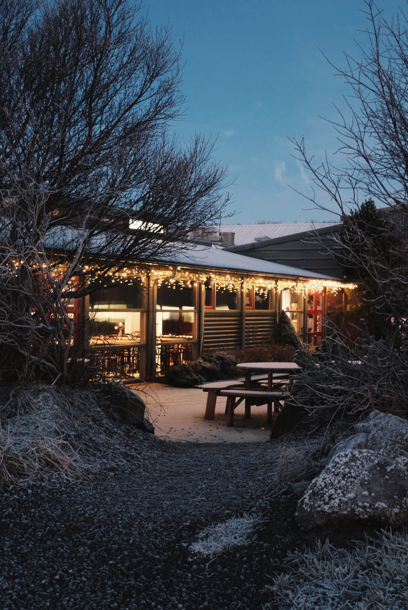
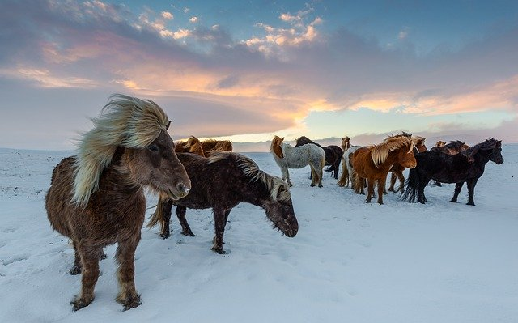
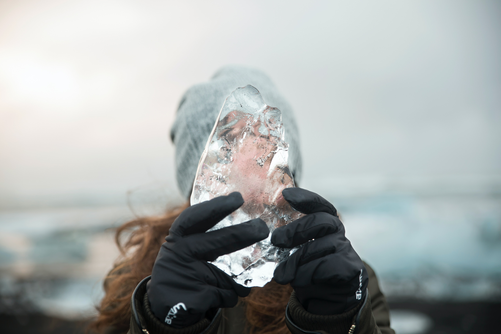
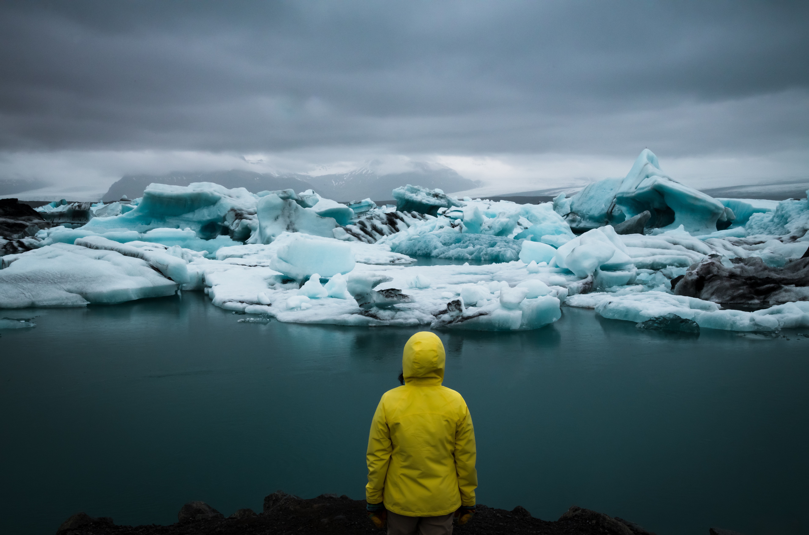

Wpis Pierwszy
Poniedziałek, 22.11.2019
Dzień 1
Pierwszy dzień zaczęliśmy od konkretnego a zarazem smacznego śniadania w Hotelu, a następnie ruszyliśmy w kierunku Reykjaviku.
Miasto zachwycało jeszcze bardziej niz się tego spodziewaliśmy. Błysk światecznych ozdób nadawał klimat, który zachwycił.
To była wyjątkowo mroźna wycieczka a z racji pierwszego dnia na Islandii (mimo ciepłych ubrań) musieliśmy się oswoić z temperaturą.
Po drodze do geotermalnego SPA zatrzymywaliśmy się non-stop, poniewaz widok lodowców zachwycał tak bardzo i musiał być uwieczniony na zdjęciach.
Na ten dzię równiez zaplanowaliśmy zwiedzanie Thorsmork czyli dolina pomiędzy lodowcami to malownicze, surowy obszar, w którym dominują majestatyczne lodowce wulkaniczne, lodowcowe rzeki, ogromne wodospady i skaliste klify. To naprawdę ciekawe miejsca, które robią wrażenie.

Świąteczne, aranżacje świetlne w centrum Reykjaviku

Tutaj ujęcie z moim nowymi, islandzkim przyjaciółmi.

Piękna bryła lodowa

Zimowy krajobraz robi niesamowite wrażenie!